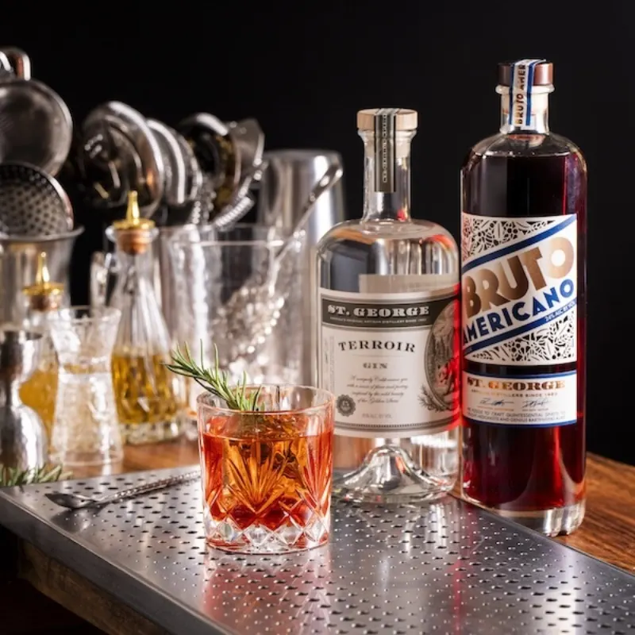
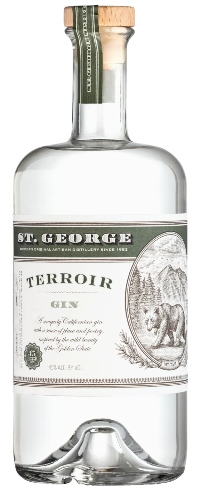
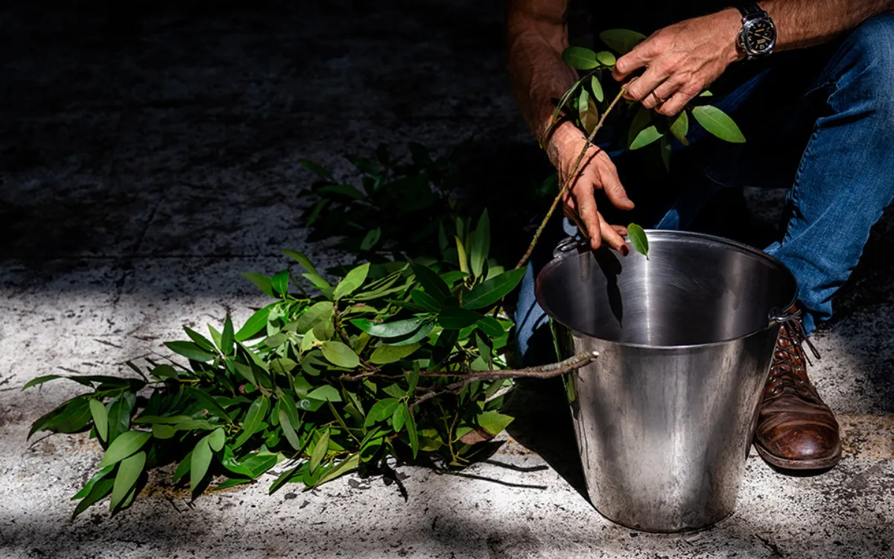
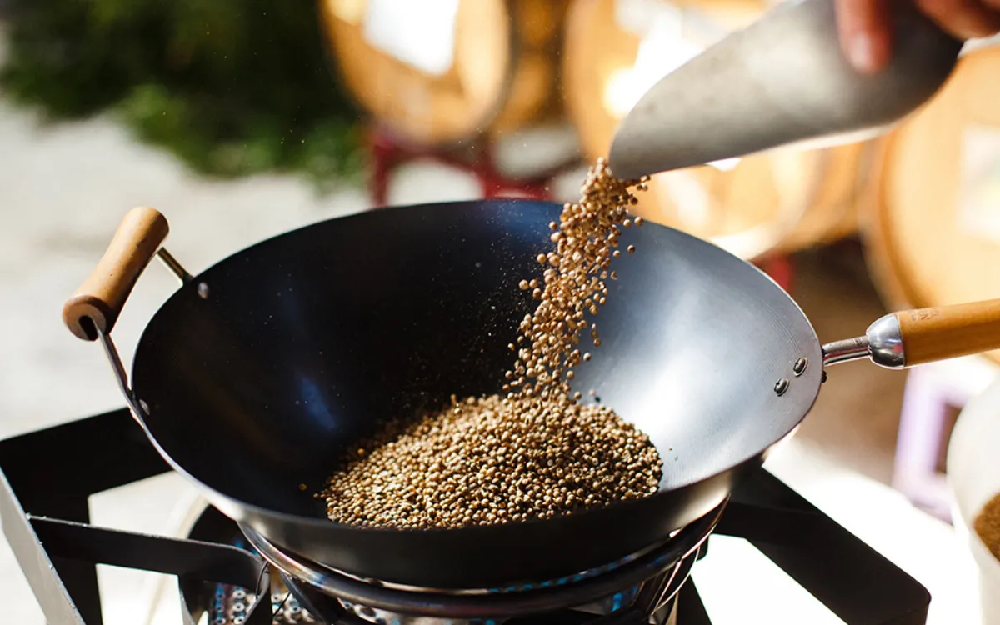
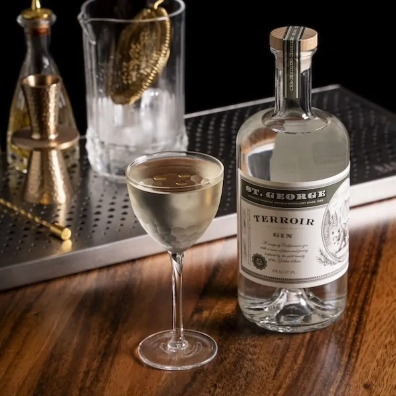
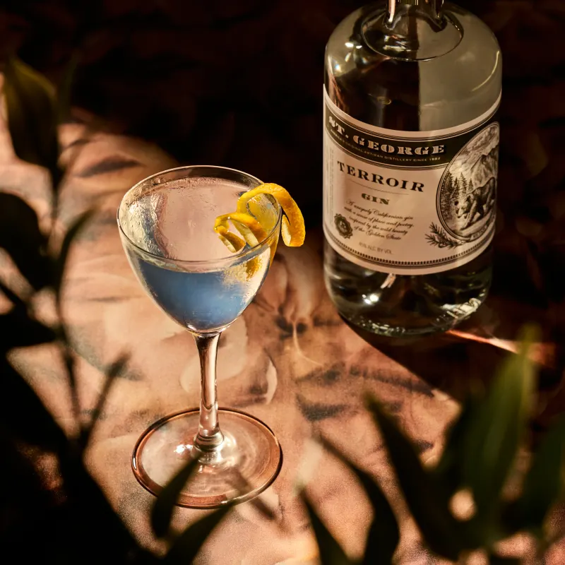

American Werewolf
St. George Spirits
- 1½ oz
- St. George Terroir Gin
- ¾ oz
- Bruto Americano
- ¾ oz
- sweet vermouth
Stir all ingredients with ice to chill, then strain into a rocks glass and serve over ice. Garnish with fresh rosemary.

One of the most distinctive gins made in America.GQ
One of the best gins you'll ever taste.Forbes
Spectacularly evocative.Food & Wine
What John Muir would have carried in his flask.Tasting Table
This gin will change how you think about gin forever.Nylon
An expression of a forest so right on, it could make the bear on the label homesick.7x7
Simply beautiful in a martini.Washington Post
One of my favorite spirits of all time.San Francisco Chronicle
A pillar of the Western-style gin category since 2011.Imbibe
Practically a sensory onslaught.PUNCH
One of the most distinctive gins made in America.GQ
One of the best gins you'll ever taste.Forbes
Spectacularly evocative.Food & Wine
What John Muir would have carried in his flask.Tasting Table
This gin will change how you think about gin forever.Nylon
An expression of a forest so right on, it could make the bear on the label homesick.7x7
Simply beautiful in a martini.Washington Post
One of my favorite spirits of all time.San Francisco Chronicle
A pillar of the Western-style gin category since 2011.Imbibe
Practically a sensory onslaught.PUNCH
The experience
Terroir is a forest in your glass, with ultra-woodsy notes of Douglas fir, California bay laurel, and a hint of citrus. Sage and wok-roasted coriander suggest hillside thickets, while angelica root and Saigon cinnamon evoke the earthy smell of the trail.
It is stunning on the rocks or in a Martini. It's also lovely in a Collins garnished with fennel, bay leaf, or whatever fresh herbs you have on hand. Its outdoorsy notes make for a perfect Bramble. Mixed with sweet vermouth and our Bruto Americano in a gin-heavy Negroni riff, we call the drink an American Werewolf.

What’s in it
The Douglas fir we use in Terroir comes from a forest in Mendocino, where it is harvested seasonally to help with fire abatement. California bay laurel grows abundantly in the hills around the Bay Area. We wok-roast the coriander, which brings out an earthy aroma. Angelica and orris root balance the bright aromatics of lemon and Seville orange. Sage, Saigon cinnamon, cardamom and fennel seed complete the picture, while juniper brings the botanicals together.
The process
We distill fir and sage separately from the other ingredients to minimize impacts from seasonal variations. Fresh California bay laurel leaves and juniper are vapor-infused. The other botanicals — including the coriander seeds we wok-roast — go right in the pot of our still.

Find your recipe
Terroir is sturdy enough to drink neat and loud enough to carry a cocktail. Here is where the bartenders we trust take it.

St. George Spirits
Stir all ingredients with ice to chill, then strain into a rocks glass and serve over ice. Garnish with fresh rosemary.

Marisa Miller · Rich Table, San Francisco
Stir, and strain into a Nick & Nora. Garnish with 3 drops of lemon oil.

Nicola Parisi
Stir gin with ice in a mixing glass, then strain into a chilled coupe rinsed with dry vermouth. Garnish with olives, a twist, or a sage leaf.